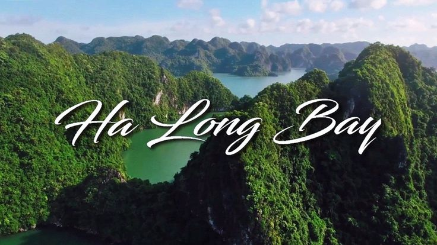
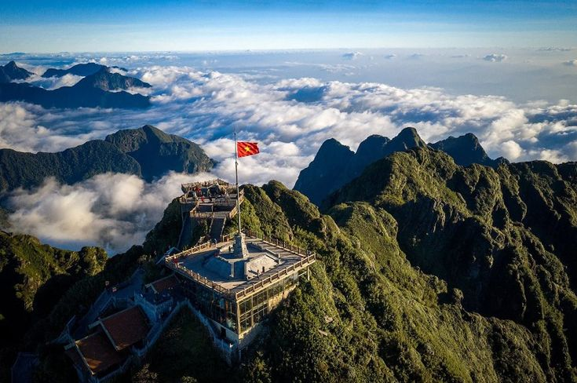
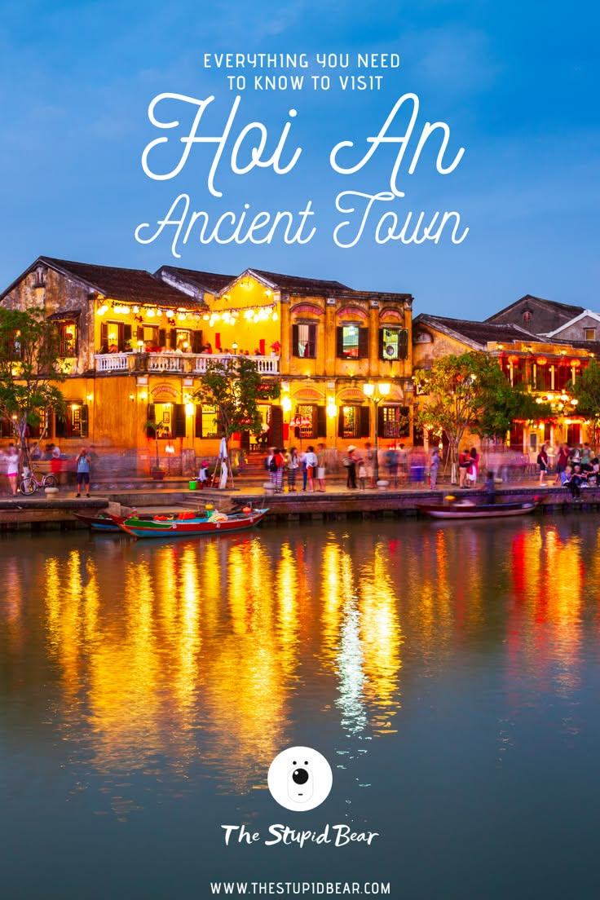
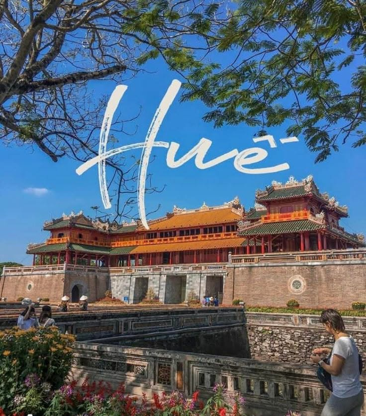
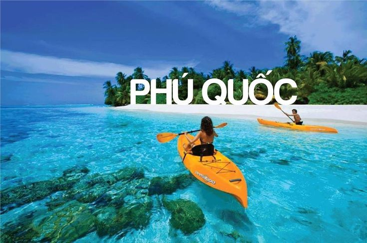
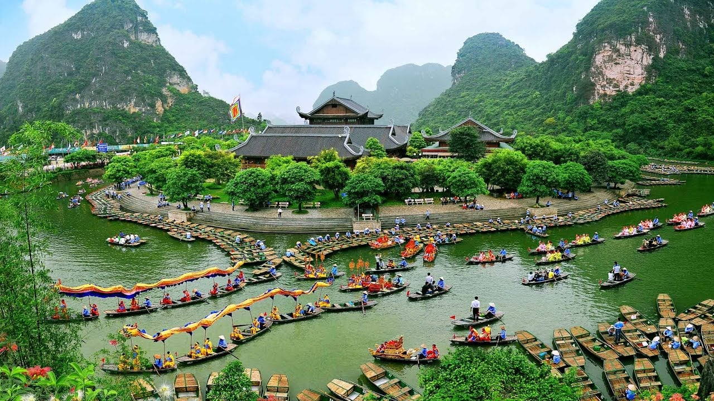
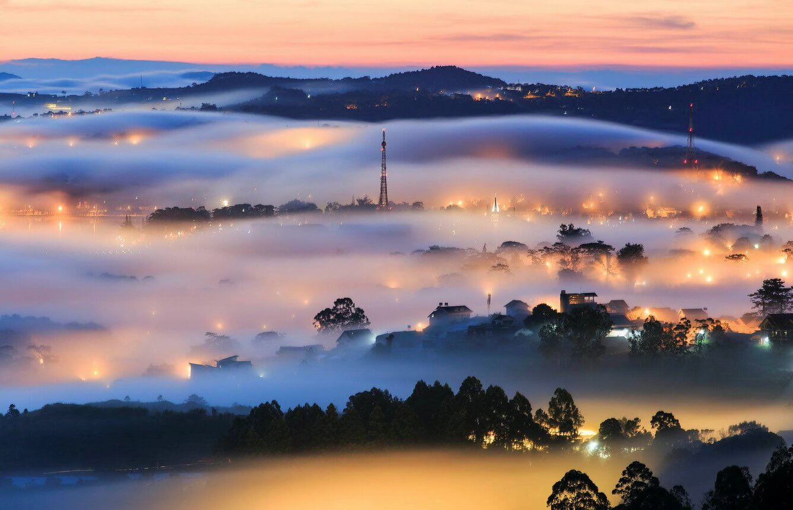
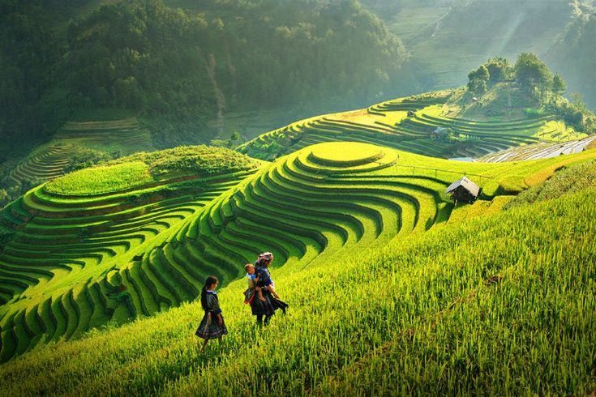
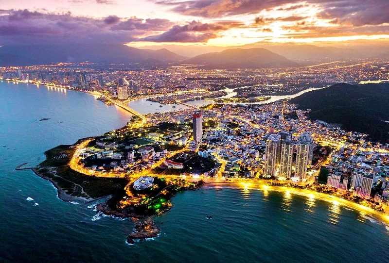

Vẻ Đẹp Việt Nam
10 điểm đến nổi bật
10 điểm đến nổi bật

Vịnh Hạ Long thuộc Quảng Ninh, nổi tiếng với hàng nghìn đảo đá vôi kỳ vĩ trên mặt biển xanh ngọc. Đây là Di sản Thiên nhiên Thế giới được UNESCO công nhận.

Sa Pa hấp dẫn với núi non hùng vĩ, ruộng bậc thang tuyệt đẹp, khí hậu mát mẻ và nét văn hoá độc đáo của các dân tộc vùng cao.

Phố cổ Hội An mang vẻ đẹp cổ kính, lung linh đèn lồng và không gian yên bình. Đây là một trong những điểm đến thơ mộng nhất Việt Nam.

Huế nổi tiếng với cố đô, lăng tẩm, chùa chiền và nhã nhạc cung đình. Thành phố mang vẻ đẹp trầm mặc và giàu giá trị lịch sử.

Phú Quốc được mệnh danh là đảo ngọc với biển xanh, cát trắng, nắng vàng và những khu nghỉ dưỡng tuyệt đẹp.

Ninh Bình nổi bật với Tràng An, Tam Cốc, chùa Bái Đính và phong cảnh non nước hữu tình như một bức tranh thiên nhiên sống động.

Đà Lạt được yêu thích bởi khí hậu mát mẻ quanh năm, rừng thông, hồ nước và những mùa hoa rực rỡ.
Đà Nẵng là thành phố biển hiện đại với cầu Rồng, Bà Nà Hills, biển Mỹ Khê và nhiều địa điểm du lịch hấp dẫn.

Mù Cang Chải nổi tiếng với những thửa ruộng bậc thang vàng óng vào mùa lúa chín, tạo nên khung cảnh cực kỳ ngoạn mục.

Nha Trang sở hữu bãi biển đẹp, nước trong xanh, hải sản phong phú và là một trong những thiên đường nghỉ dưỡng hàng đầu Việt Nam.